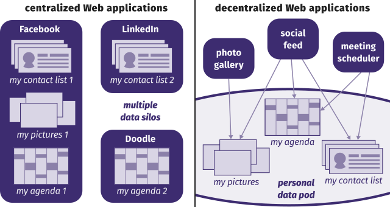

Overview
- What issues do we want to solve?
- Looking under the hood: the standards powering the Web
- Core Solid concepts
- Get coding: Practical Solid
Let's say you want to build an app
Standing on the shoulder of giants ? You wish.
competition for user data as much as for quality of service
How we want data to be managed
- Still stored on the Web, to be shared easily
- You control who can read and write
- Applications can reuse each other's data

Linked Data to the rescue
|
Data on the Web, free license |
|
|
Data in a structured format |
|
|
Data in an open structured format |
|
|
Represent data using W3C standards |
|
|
Link data to other data |
Looking under the hood
Standards that make the Web
Looking under the hood
Standards that make the Web
Identifying resources with IRI
Identifying resources with IRI
- Unique and unambiguous
- As in one IRI points to one resource
- Dereferencable
Looking under the hood
Standards that make the Web
Accessing resources with HTTP
Accessing resources with HTTP
- Hypertext navigation
- Content negociation
- CRUD operations
- PUT, GET, PATCH, DELETE
- POST, HEAD, OPTIONS...
Looking under the hood
Standards that make Linked Data
Looking under the hood
Standards that make Linked Data
Describing resources with RDF
Describing resources with RDF
- Typed relations between typed resources
- Everything has an IRI
- prefix: obelisk: http://w3id.org/obelisk/
- An obelisk:Obelisk is obelisk:ownedBy a obelisk:Person.
- An obelisk:Obelisk is obelisk:builtBy a obelisk:Sculptor.
- An obelisk:Obelisk has a obelisk:height which is a numerical value.
@prefix obelisk: <http://w3id.org/obelisk/> .
@prefix me: <http://your.webid> .
:myFirstObelisk a obelisk:Obelisk ;
obelisk:ownedBy me: ;
obelisk:heigth "15.0" .
Looking under the hood
Standards that make Linked Data
Structuring resources with LDP
Structuring resources with LDP
LDP = RDF + REST + Containment
@prefix cont: <>.
@prefix ldp: <http://www.w3.org/ns/ldp#>.
@prefix tur: <http://www.w3.org/ns/iana/media-types/text/turtle#>.
cont: a ldp:BasicContainer, ldp:Container;
ldp:contains <resource_1.ttl>, <resource_2.ttl>.
<resource_1.ttl> a tur:Resource, ldp:Resource.
<resource_2.ttl> a tur:Resource, ldp:Resource.
Why not a SPARQL endpoint?
Different philosophies
- LDP has little expressivity: it only captures containment
- SPARQL is a full-blown query language
Upsides of LDP on the Web
- HTTP bindings for simple operations
- Easier to cache
- Defines small, focused graphs on which SPARQL may be used
Looking under the hood
Standards that make Solid
Looking under the hood
Standards that make Solid
Identifying agents with WebId
Identifying agents with WebID
- A WebID is an IRI dereferencable into a
foaf:ProfileDocument
- Any person, group or bot is identified as an Agent by its WebID
- WebID is a pre-existing W3C draft
Looking under the hood
Standards that make Solid
Controling access with Web-AC
Controling access with Web-AC
- WebAC defines a vocabulary for access control:
- Read, Append, Write, Control
- Access control is defined for <Resource, WebID> pairs
- An inheritence mechanism based on containment is defined
<#authorization1>
a acl:Authorization;
acl:accessTo <https://alice.example.com/docs/shared-file1>;
acl:mode acl:Read, acl:Write, acl:Control;
acl:agent <https://alice.example.com/profile/card#me>.
Solid, the big picture
Core concepts
Solid, the big picture
Core concepts
Logging the user in: the Identity Provider
Solid, the big picture
Core concepts
Storing the data: the Pod
Solid, the big picture
Core concepts
Accessing the data: the apps